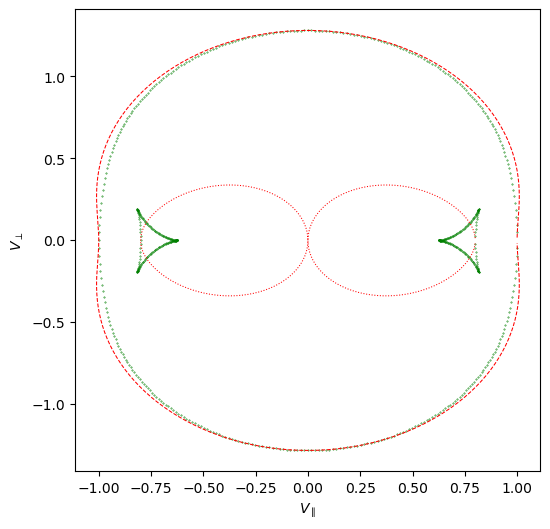
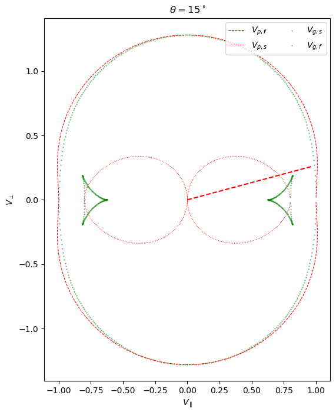
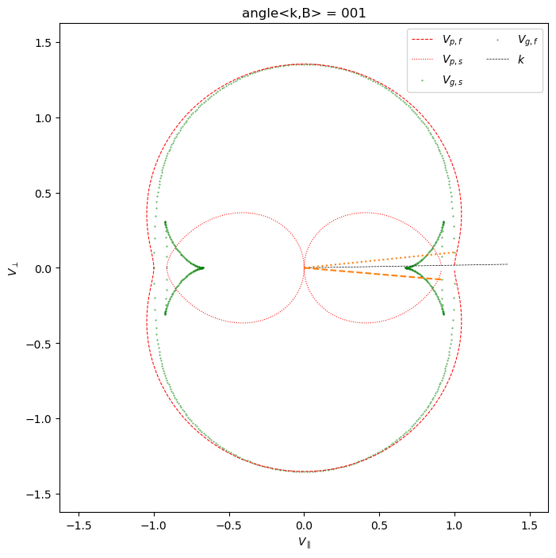
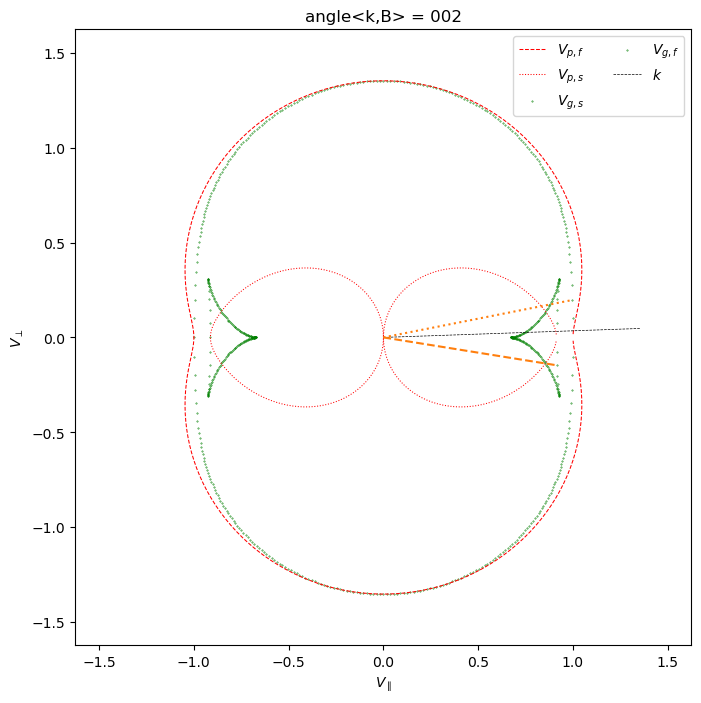

Code
from numpy import cos, sin, sqrtdef calc_VpVg_fastandslow(cs, ca, theta):
"""Calculates the phase velocities and group velocities for fast and slow waves.
"""
cos_angle = cos(theta)
sin_angle = sin(theta)
cm = sqrt(cs**2 + ca**2)
cn4 = cm**4 - 4 * cs**2 * ca**2 * cos_angle**2
cn2 = sqrt(cn4)
tmp2 = cm**2 - cn2
Cp_slow = sqrt(0.5 * (tmp2))
Cp_fast = sqrt(0.5 * (cm**2 + cn2))
Cg_slow_perp = (
sin_angle * Cp_slow * (1 - cs**2 * ca**2 / Cp_slow**2 / cn2 * cos_angle**2)
)
Cg_slow_para = (
cos_angle * Cp_slow * (1 + cs**2 * ca**2 / Cp_slow**2 / cn2 * sin_angle**2)
)
Cg_fast_perp = (
sin_angle * Cp_fast * (1 + cs**2 * ca**2 / Cp_fast**2 / cn2 * cos_angle**2)
)
Cg_fast_para = (
cos_angle * Cp_fast * (1 - cs**2 * ca**2 / Cp_fast**2 / cn2 * sin_angle**2)
)
return {
"Vps": Cp_slow,
"Vpf": Cp_fast,
"Vgs_perp": Cg_slow_perp,
"Vgs_para": Cg_slow_para,
"Vgf_perp": Cg_fast_perp,
"Vgf_para": Cg_fast_para,
}import numpy as np
from scipy.optimize import root_scalar
cs = 0.8
ca = 1.0
cm = np.sqrt(cs**2 + ca**2)
angle_kb = np.arange(1,360,1) * np.pi/180
result = calc_VpVg_fastandslow(cs,ca,angle_kb)
Cp_slow = result['Vps']
Cp_fast = result['Vpf']
Cg_slow_perp = result['Vgs_perp']
Cg_slow_para = result['Vgs_para']
Cg_fast_perp = result['Vgf_perp']
Cg_fast_para = result['Vgf_para']/var/folders/tg/rfd0nr_970s3mv1fspgvkkxm0000gn/T/ipykernel_22523/3788757295.py:18: RuntimeWarning: divide by zero encountered in divide
sin_angle * Cp_slow * (1 - cs**2 * ca**2 / Cp_slow**2 / cn2 * cos_angle**2)
/var/folders/tg/rfd0nr_970s3mv1fspgvkkxm0000gn/T/ipykernel_22523/3788757295.py:18: RuntimeWarning: invalid value encountered in multiply
sin_angle * Cp_slow * (1 - cs**2 * ca**2 / Cp_slow**2 / cn2 * cos_angle**2)
/var/folders/tg/rfd0nr_970s3mv1fspgvkkxm0000gn/T/ipykernel_22523/3788757295.py:21: RuntimeWarning: divide by zero encountered in divide
cos_angle * Cp_slow * (1 + cs**2 * ca**2 / Cp_slow**2 / cn2 * sin_angle**2)
/var/folders/tg/rfd0nr_970s3mv1fspgvkkxm0000gn/T/ipykernel_22523/3788757295.py:21: RuntimeWarning: invalid value encountered in multiply
cos_angle * Cp_slow * (1 + cs**2 * ca**2 / Cp_slow**2 / cn2 * sin_angle**2)from matplotlib import pyplot as plt
# add a figure of equal x and y aspect ratio
fig, ax = plt.subplots(figsize=(6,6))
# plot phase speed of fast/slow
ax.plot(Cp_fast * np.cos(angle_kb), Cp_fast * np.sin(angle_kb),
ls='--',color='red',lw=0.75,label=r'$V_{p,f}$')
ax.plot(Cp_slow * np.cos(angle_kb), Cp_slow * np.sin(angle_kb),
ls=':',color='red',lw=0.75,label=r'$V_{p,s}$')
# plot group velocity of fast/slow wind
ax.scatter(Cg_slow_para, Cg_slow_perp, marker='.', s=0.5,color='green',label=r'$V_{g,s}$')
ax.scatter(Cg_fast_para, Cg_fast_perp, marker='.', s=0.5,color='green',label=r'$V_{g,f}$')
ax.set_xlabel(r'$V_{\parallel}$')
ax.set_ylabel(r'$V_{\perp}$')Text(0, 0.5, '$V_{\\perp}$')
def func_for_maximum_Vgsperp_costheta(h,cs = 0.5, ca = 1.0):
cs2 = cs*cs
ca2 = ca*ca
cm2 = cs2 + ca2
cm4 = cm2 * cm2
cn4 = cm4 - 4*cs2*ca2*h
if cn4<0:
cn4 = 0
cn2 = sqrt(cn4)
vp2 = 0.5 * (cm2 - cn2)
r = cs2 * ca2 / vp2 / cn2
return r * (1-h) * (1-r*h) - (1-r*h) - 2 * (1-h)\
*(r - h * r*r * ( 2 - cm2 / cn2))# find the kB angle corresponding to maximum Vgsperp
sol = root_scalar(func_for_maximum_Vgsperp_costheta, args=(cs,ca), bracket = [1e-3,1-1e-3], method='brentq')
if sol.converged:
h = sol.root # h = cos^2 theta
theta_max_Vgsperp = np.arccos(np.sqrt(h))
fig = plt.figure(figsize=[8,8])
sub = fig.add_subplot(111,aspect='equal')
# plot phase speed of fast/slow
sub.plot(Cp_fast * np.cos(angle_kb), Cp_fast * np.sin(angle_kb),
ls='--',color='red',lw=0.75,label=r'$V_{p,f}$')
sub.plot(Cp_slow * np.cos(angle_kb), Cp_slow * np.sin(angle_kb),
ls=':',color='red',lw=0.75,label=r'$V_{p,s}$')
# plot group velocity of fast/slow wind
sub.scatter(Cg_slow_para, Cg_slow_perp, marker='.', s=0.5,color='green',label=r'$V_{g,s}$')
sub.scatter(Cg_fast_para, Cg_fast_perp, marker='.', s=0.5,color='green',label=r'$V_{g,f}$')
# draw a straight line connected to the instantaneous Cg
# sub.plot([0,Cg_fast_para[i]],[0,Cg_fast_perp[i]],color='C1',ls=':')
# sub.plot([0,Cg_slow_para[i]],[0,Cg_slow_perp[i]],color='C1',ls='--')
# direction of k corresponding to the maximum value of Vgsperp
sub.plot([0, np.cos(theta_max_Vgsperp)], [0, np.sin(theta_max_Vgsperp)],
color='red', ls='--')
sub.legend(ncol=2)
sub.set_title(r'$θ = {}^\circ$'.format(int(theta_max_Vgsperp * 180 / np.pi)))
sub.set_xlabel(r'$V_{\parallel}$')
sub.set_ylabel(r'$V_{\perp}$')
fig;
# find the kB angle corresponding to maximum Vgsperp
sol = root_scalar(func_for_maximum_Vgsperp_costheta, args=(cs,ca), bracket = [1e-3,1-1e-3], method='brentq')
if sol.converged:
h = sol.root # h = cos^2 theta
theta_max_Vgsperp = np.arccos(np.sqrt(h))
for i in range(len((angle_kb[0:2]))):
theta = angle_kb[i]
fig = plt.figure(figsize=[8,8])
sub = fig.add_subplot(111,aspect='equal')
# plot phase speed of fast/slow
sub.plot(Cp_fast * np.cos(angle_kb), Cp_fast * np.sin(angle_kb),
ls='--',color='red',lw=0.75,label=r'$V_{p,f}$')
sub.plot(Cp_slow * np.cos(angle_kb), Cp_slow * np.sin(angle_kb),
ls=':',color='red',lw=0.75,label=r'$V_{p,s}$')
# plot group velocity of fast/slow wind
sub.scatter(Cg_slow_para, Cg_slow_perp, marker='.', s=0.5,color='green',label=r'$V_{g,s}$')
sub.scatter(Cg_fast_para, Cg_fast_perp, marker='.', s=0.5,color='green',label=r'$V_{g,f}$')
sub.plot([0, k_radius * np.cos(theta)], [0, k_radius * np.sin(theta)],
ls='--', lw=0.5, color = 'k', label=r'$k$')
# draw a straight line connected to the instantaneous Cg
sub.plot([0,Cg_fast_para[i]],[0,Cg_fast_perp[i]],color='C1',ls=':')
sub.plot([0,Cg_slow_para[i]],[0,Cg_slow_perp[i]],color='C1',ls='--')
# # direction of k corresponding to the maximum value of Vgsperp
# sub.plot([0,k_radius * np.cos(theta_max_Vgsperp)], [0, k_radius * np.sin(theta_max_Vgsperp)],
# color='red', ls='--')
sub.legend(ncol=2)
sub.set_title(r'angle<k,B> = {:03d}'.format(int(angle_kb[i] * 180 / np.pi)))
sub.set_xlabel(r'$V_{\parallel}$')
sub.set_ylabel(r'$V_{\perp}$')
sub.set_xlim([-1.2*cm,1.2*cm])
sub.set_ylim([-1.2*cm,1.2*cm])
# fig.savefig('./group_velocity_angle/anglekb_{:03d}.png'.
# format(int(angle_kb[i] * 180 / np.pi)),dpi=300)
# plt.close(fig)
